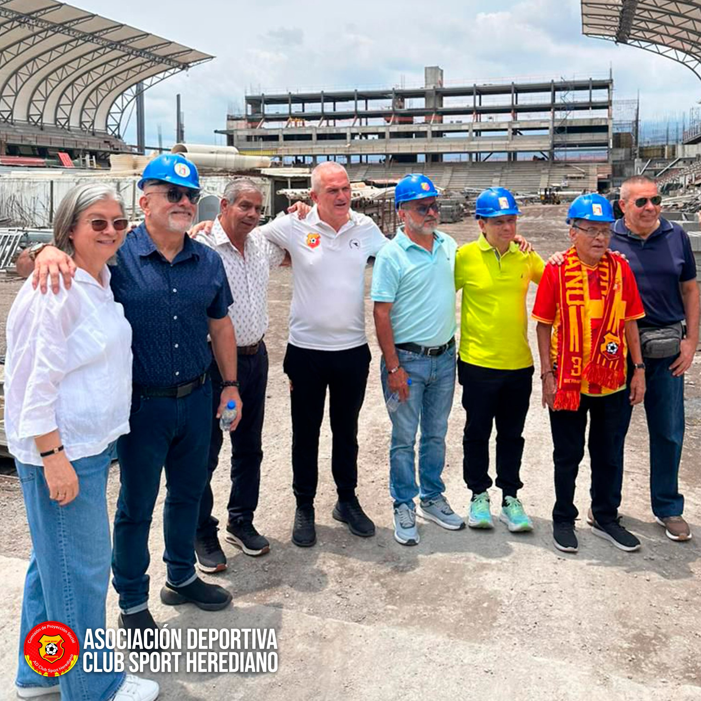
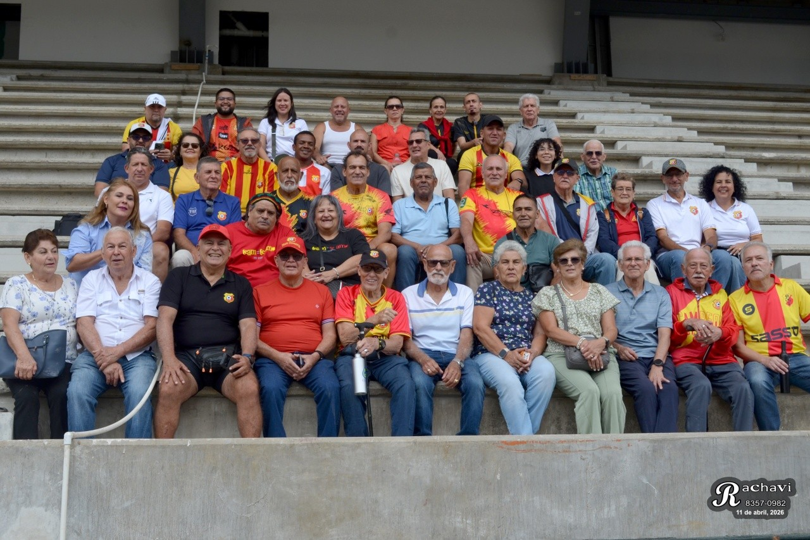
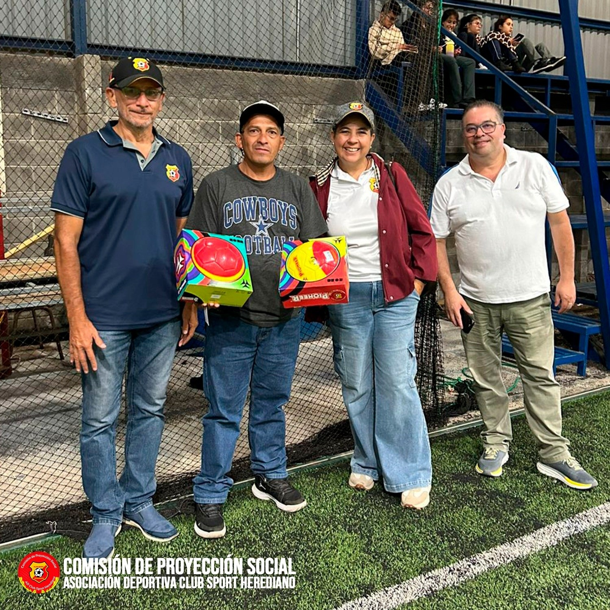
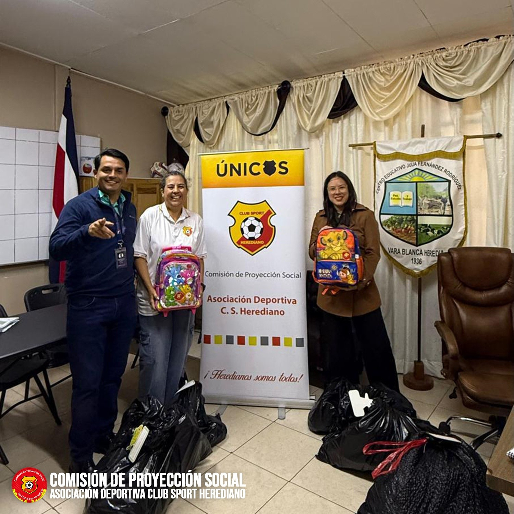
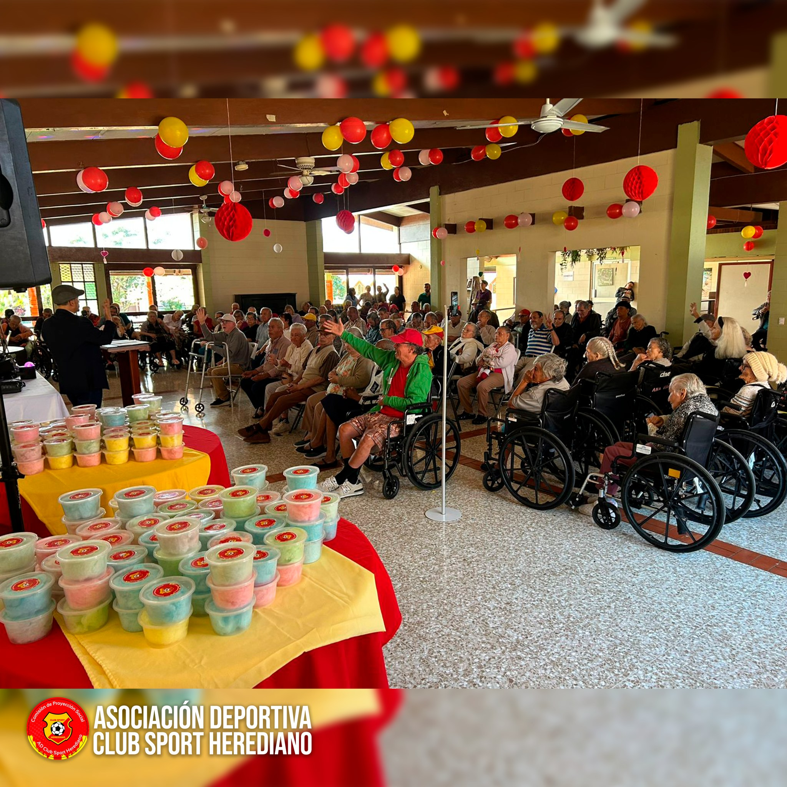

Comisión de Proyección Social
La Comisión de Proyección Social de la Asociación del Club Sport Herediano se encarga de desarrollar e impulsar iniciativas que beneficien a la comunidad, enfocándose en los sectores más vulnerables. Estas acciones reflejan nuestro compromiso con el desarrollo comunitario y la mejora del bienestar, en alineación con los valores de solidaridad y responsabilidad social que caracterizan a nuestra organización.
Miembros de la Comisión
- Alejandro Camacho Hernández
- Magda Alvarado León
- Oscar Arce Rodríguez
- William Montero Castro
- Minor Rodríguez Rojas
- Asesora: Ana Gabriela Fernández Hernández
Un momento que nos tocó el corazón
Hoy vivimos una experiencia profundamente emotiva junto a la Comisión de Proyección Social del Club Sport Herediano, Fuerza Herediana y el Departamento de Proyección Social de Canal 7. Tuvimos el honor de acompañar a don Leónidas Solano Acuña, herediano de corazón y pensionado del canal, en una visita muy especial para conocer nuestro nuevo estadio. Más que cemento y graderías, este estadio es historia viva, identidad y el latido de una afición que no se rinde. La emoción de don Leónidas nos recordó que el fútbol trasciende generaciones y que ser herediano se lleva en el alma. El deporte sigue siendo ese puente que nos une, nos inspira y nos impulsa a seguir creciendo, siempre pensando en nuestros socios y aficionados.


Nuestra historia vive en cada paso
Más de 40 exjugadores del Club Sport Herediano visitaron el nuevo estadio en una jornada llena de emoción, recuerdos y orgullo rojiamarillo. Entre anécdotas, abrazos y sonrisas, revivieron momentos que marcaron nuestra historia y fueron testigos de la evolución del club hacia una nueva era. Un encuentro especial junto a la Junta Directiva, la Comisión de Proyección Social y medios de comunicación, que reafirma el vínculo eterno entre nuestro pasado, presente y futuro.
Balones que inspiran sueños en Vara Blanca
Gracias al valioso apoyo de nuestros socios y aficionados, la Comisión de Proyección Social de la Asociación del Club Sport Herediano realizó la entrega de balones de fútbol en la Escuela Julia Fernández Rodríguez, el Liceo Rural y la Asociación de Desarrollo Integral de Vara Blanca. Esta iniciativa busca fomentar la práctica del deporte entre niñas, niños y jóvenes, promoviendo la recreación sana, el trabajo en equipo y estilos de vida saludables. Con acciones como esta, reafirmamos nuestro compromiso con las comunidades y contribuimos al desarrollo integral de la niñez y la juventud.

Hoy vivimos una jornada llena de sonrisas y esperanza
La Comisión de Proyección Social de la Asociación del Club Sport Herediano realizó la entrega de 60 kits escolares a niños y niñas de las escuelas Julia Fernández de Cortés y San Rafael, en el Circuito de Vara Blanca. Gracias al apoyo de nuestra Asociación, socios y aficionados, cada estudiante recibió los útiles necesarios para iniciar el curso lectivo con ilusión y motivación. Cada kit fue preparado cuidadosamente según el grado que cursan, incluyendo maletín, cuadernos, lápices, cartuchera y todos los implementos esenciales para sus estudios. Creemos firmemente que la educación transforma vidas, y nos llena de orgullo poder aportar un granito de arena al futuro de estos niños y niñas.

Alegría y convivencia en el Hogar Alfredo y Delia González Flores
La Comisión de Proyección Social de la Asociación Deportiva Club Sport Herediano vivió una mañana muy especial junto a los residentes del Hogar Alfredo y Delia González Flores. En conjunto con el cantautor Barba, la administración de la institución y el valioso apoyo de voluntarios y colaboradores, se realizó una emotiva actividad llena de música, sonrisas y momentos inolvidables. Nuestra mascota del Team dio una cálida bienvenida, se compartió una reflexión especial y disfrutamos de un espacio de animación que llenó el salón de entusiasmo y participación. Uno de los momentos más significativos fue la celebración de los cumpleaños del mes, además de la entrega de algodón de azúcar que llevó aún más alegría a todos los presentes.

Actividades de Proyección Social 2025:
Ver Informe Completo (PDF)Actividades de Proyección Social 2024:
Ver Informe Completo (PDF)